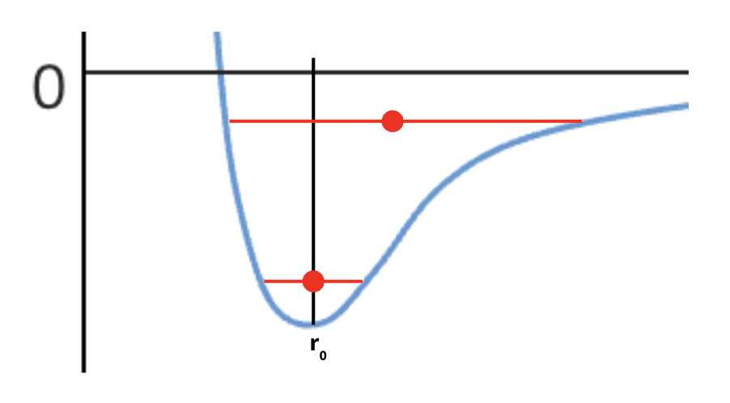
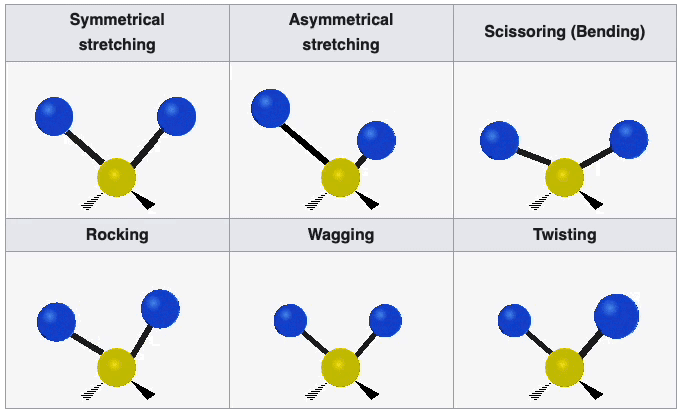

Intermolecular Forces and Deformation#
Learning Objectives
By the end of this topic you should:
Be able to understand and reproduce the force-separation and energy-separation curves for molecules.
Give a qualitative explanation for the dissociation energy of a solid.
Give a qualitative explanation for thermal expansion.
Intermolecular Forces#
Fig. 32 shows how matter remains, well matter.
![A graph showing two curves. The horizontal axis represents distance. The vertical axis represents both potential energy (U) and force (F). The potential energy curve is a smooth curve that starts high on the left, dips down to a minimum point labeled "U_0" at a distance labeled "r_0", and then rises slightly before leveling off. The force curve is similar shape the potential energy curve, crossing the horizontal axis at the same distance "r_0". Text labels indicate which curve represents "Force" and which represents "Potential energy."](_images/IntermolecularForcePlot.png)
Fig. 32 A graph showing the Lennard-Jones potential, which describes the interaction energy between two neutral atoms or molecules. The horizontal axis represents the distance between the two particles \((r)\), and the vertical axis represents the potential energy \((U)\) and force \((F)\). The potential energy curve has a characteristic shape with a minimum \(U_0\) at a specific distance \(r_0\), indicating the equilibrium separation distance where the attractive and repulsive forces between the particles are balanced.#
First of all let us consider a molecular gas. Gas molecules have large spatial separations between them which means that for the majority of the time these molecules move independently of one another. Generally they only interact with one another when they are close enough to collide.
On the other hand, for liquids and solids the molecules are far closer together and interact with one another via intermolecular forces. These are not to be confused with intramolecular forces (those that bind the atoms together in molecules), which are much stronger. These intermolecular forces are simply caused by the interactions between the electrically charged constituents of the molecules.
These intermolecular forces only act between molecules when they are in close proximity to one another. Therefore we can conclude that forces between molecules are attractive at short distances only. We define the attractive force acting between molecules to be negative as they act to reduce intermolecular distance.
When we consider a material, we must also recall that the majority of matter is empty space, from which we can conclude that there must be some force that prevents atoms/molecules from getting too close to one another. Therefore at very short ranges, the force acting between molecules must be repulsive. We define the repulsive force acting between molecules to be positive.
The red line in Fig. 32 represents the sum of the attractive and repulsive forces. As the molecules are brought closer together, they become more strongly attracted to one another (the force becomes increasingly negative), however as the separation reduces even further, the force begins to become less negative and the positive attraction between the molecules begins to decrease, until the intermolecular force (the net force of attractive + repulsive) acting on the molecules becomes zero. The separation between the molecules when the intermolecular force becomes zero is known as the equilibrium separation. This spacing is approximately the distance between molecules in liquids and solids.
When the separation between the molecules becomes less than the equilibrium distance, the force acting on the molecules becomes repulsive. The gradient of this repulsive force as a function of distance is much steeper than the attractive force, therefore only a small compression beyond the equilibrium distance corresponds to a large increase in the repulsive force acting between the molecules.
As these forces are a function of distance we can safely assume that we are actually witnessing the effect of two independent forces and the intermolecular force is simply the net force acting on the molecules. Clearly at small distances, the repulsive force dominates. You don’t need to know the underlying derivation or model for this, but one of the most successful models of this two-force system is known as the Lennard-Jones potential shown in Fig. 33 below.
![A graph showing three curves. The horizontal axis represents distance. The vertical axis represents both potential energy (U). The total potential energy curve is a smooth curve that starts high on the left, dips down to a minimum point labeled "U_0" at a distance labeled "r_0", and then rises slightly before leveling off. The first curve is dashed in blue and starts very positive on the left and decreases smoothly until flat around zero. The second curve is dashed in red and starts very negative on the left and increases smoothly until flat around zero.](_images/LJPot.png)
Fig. 33 A graph showing the Lennard-Jones potential, which describes the interaction energy between two neutral atoms or molecules. The horizontal axis represents the distance between the two particles (\(r\)). The vertical axis represents the potential energy (\(U\)). The graph shows three curves: the total Lennard-Jones potential (solid black line), the attractive term (dashed red line), and the repulsive term (dashed blue line). The potential energy curve has a characteristic shape with a minimum at a specific distance, indicating the equilibrium separation distance where the attractive and repulsive forces between the particles are balanced.#
As the molecules are brought closer together, we will have an increase in the density of like charges such as electrons which will therefore repel one another. We can also consider the Pauli exclusion principle which states that two fermions (such as electrons) cannot occupy the same quantum state. When two are brought together they experience a repulsive force known as Pauli-repulsion. You will meet the exclusion principle in more depth in your particle and quantum courses if you go on to study Physics.
Intermolecular Potential#
We can expand upon this explanation further by considering the potential energy of the molecules as a function of separation distances. This is what is plotted in blue in this graph.
![A graph showing two curves. The horizontal axis represents distance. The vertical axis represents both potential energy (U) and force (F). The potential energy curve is a smooth curve that starts high on the left, dips down to a minimum point labeled "U_0" at a distance labeled "r_0", and then rises slightly before leveling off. The force curve is similar in shape to the potential energy curve, crossing the horizontal axis at the same distance "r_0". Text labels indicate which curve represents "Force" and which represents "Potential energy." An arrow points horizontally between two vertical lines on the horizontal axis, labeled "Bond length" and "r_0," indicating the distance between the two atoms at the equilibrium point. A vertical arrow points downwards from the minimum point of the potential energy curve to the horizontal axis, labeled "Bond Strength."](_images/IntermolecularPotential.png)
Fig. 34 A graph showing the Lennard-Jones potential, which describes the interaction energy between two neutral atoms or molecules. This graph is similar to Fig. 32, but with an additional label indicating the “Bond length” (\(r_0\)), which represents the equilibrium separation distance between the two atoms where the potential energy is at a minimum and has a characteristic bond strength.#
We see that the potential energy has a minimum at the equilibrium distance. This is what we call a potential well. We can see here that the net force acting on the molecule is zero in this potential well so there is clearly a relationship between the force and the potential energy. The force at any given intermolecular separation is simply equal to the gradient of the potential energy function:
The turning point of the potential energy curve has a gradient of zero and this is equal to the magnitude of the force acting on the molecule at that separation distance.
At low temperatures molecules will have some kinetic energy, but the average kinetic energy of a molecule will be less than the depth of the potential well, so the molecule remains bound as either a liquid or a solid with average intermolecular spacings of \(r_0\).
If the molecules are supplied with heat and their temperatures increase, their average kinetic energies will exceed the depth of the potential well and the molecule can escape the intermolecular force and move independently in the gaseous phase.
The diagram shows that the average bond length and strength can be determined from the properties of the potential well.
Thermal Expansion#
We can use the intermolecular potential plot to explain why materials expand when they are heated.

Looking at this plot you will notice that the shape of the potential well is asymmetric around \(r_0\) as the repulsive force is stronger than the attractive force at short distances (see Fig. 33 for a visual reminder).
Solids#
First, let us thing about solids. Solids are made up of atoms arranged in a lattice, constantly vibrating around their equilibrium positions. Even at low temperatures, these vibrations occur due to the inherent thermal energy. Increasing the temperature means giving the atoms more energy, causing them to vibrate with larger amplitudes. However we’ve seen that the potential well is steeper on the repulsive side and shallower on the attractive side. This asymmetry is the key to thermal expansion.
As the atoms vibrate with larger amplitudes (due to the increased temperature), they explore a wider range of the potential well. Because of the asymmetry, they spend slightly more time at larger interatomic separations than at compressed ones. While they experience both attractive and repulsive forces, the shallower attractive side allows for a greater average separation.
Think of it this way: the atoms can move further apart more easily than they can be squeezed together. While they oscillate back and forth, the average distance between them increases with increasing vibrational amplitude.
This increase in average interatomic distance is what we observe as thermal expansion. The solid expands because, collectively, the atoms are spaced slightly further apart. It’s a direct consequence of the increased thermal vibrations coupled with the asymmetric nature of the interatomic potential well.
Heating a metal sheet with a hole in the middle
When a solid expands due to heating, it expands in all directions. This includes any “negative space” within the solid, such as a hole in the middle of a solid sheet. It’s a common misconception that the hole might shrink as the surrounding material expands inwards. However, this is incorrect.
Consider the atomic view (middle image). Heating the material increases the average separation between all atoms. This increased spacing applies equally to the atoms bordering the hole. As these atoms move outwards, the hole they define also expands (rightmost image).
The hole expands because the material itself is expanding uniformly. It’s not that the expansion pushes inwards; rather, the expanding atomic lattice effectively “stretches” the hole along with it. The hole behaves as if it were made of the same material as the sheet; it expands by the same proportion.
Liquids#
In liquids, the intermolecular distances are slightly greater than in the corresponding solid phase, but the key difference is the lack of long-range order. While there might be small, transient clusters of molecules with some local structure, liquids don’t have the rigid, extended lattice of a solid. The molecules have much greater freedom of movement, constantly jostling and rearranging.
When we increase the temperature of a liquid, the molecules gain kinetic energy and move more vigorously. This increased motion leads to larger average intermolecular separations, just as in solids. However, because liquids lack the fixed structure of a solid, the expansion isn’t as constrained. The increased freedom of movement allows the molecules to spread out more readily, and the thermal expansion of liquids is generally greater than that of solids. The same principle of an asymmetric intermolecular potential still applies, but its effect is more pronounced due to the greater freedom of movement.
Gases#
Gases are characterised by widely separated molecules with very weak intermolecular forces. In the ideal gas model, we even neglect these forces entirely. Increasing the temperature of a gas dramatically increases the kinetic energy of the molecules, leading to much greater speeds and, consequently, a larger average separation between molecules.
Because the intermolecular forces are so weak (or negligible in the ideal gas case), the expansion of a gas is primarily driven by the increased kinetic energy of the molecules. The molecules simply fly further apart when they have more energy. This is why gases exhibit the largest thermal expansion coefficients compared to solids and liquids. The expansion is not constrained by any lattice structure or significant intermolecular forces, so the molecules are free to occupy a much larger volume.
Dissociation Energy#
The dissociation energy, \(\epsilon\), is the amount of energy required to break the intermolecular bonds between a pair of molecules in a substance. Of course this only applies to a single pair of molecules, so we can scale it up to consider breaking apart all of the pair-bonds to turn a solid into an ideal gas (no intermolecular interactions). This process of changing state from solid to gas is sublimation as so we can relate \(\epsilon\) to the latent heat of sublimation of the substance, \(L_\text{SM}\), using the equation:
where \(n\) is the number of moles and \(N_a\) is Avagadro’s number. The factor of a half is present to ensure that the bond between pairs of atoms is not double counted. Looking at the intermolecular potential plot, the dissociation energy is simply equal to the depth of the well. By considering how much thermal energy a material poses with respect to the dissociation energy, we are able to categorise it into three different types of matter: cold matter, moderate temperature or high temperature. The features of each of these categories is tabulated below:
Thermal Energy |
Degrees of Freedom |
Molecular Separation |
Structure |
|
|---|---|---|---|---|
Cold Matter |
\(<0.1\epsilon\) |
Vibrational |
\(r_0\) (likely a solid) |
Often regular arrangement (crystaline structure) |
Moderate Temperature |
\(0.1\epsilon - 1\epsilon\) |
Vibrational, Rotational, Translational |
\(\approx r_0\) (likely a liquid) |
No regular structure but still condensed |
High Temperature |
\(>\epsilon\) |
Translational Motion Dominant |
\( >10 r_0\) (gaseous - molecular separation is pressure dependant) |
None (Intermolecular forces negligible bar collisions) |
Degrees of Freedom
If you are unfamiliar with this term, it simply means the way that something is able to move. Vibrational simply means oscillating back and forth around a fixed point, translational means being able to move in the \(x\), \(y\) and \(z\) directions and rotational means… well rotating.
For each degree of freedom listed above, there are different modes. For example a triatomic gas may be able to vibrate either by stretching symetrically, stretching assymetrically, scissoring, rocking, wagging or twisting as shown below:

This illustration was taken from Wikipedia
Deformation#
Now that we have looked at the forces that act on materials at a molecular level we are going to look at the impact exerting forces has on a macroscopic scale by considering the deformation of solids.
Deformation is by definition just the change in shape or dimensions of something caused by the application of external forces.

Fig. 35 A diagram illustrating the difference between tension and compression forces on a bar. The top bar shows tension, where applied forces (indicated by arrows) are pulling outwards, causing elongation. The bottom bar shows compression, where applied forces are pushing inwards, causing shortening or buckling.#
Fig. 35 shows examples of tension and compression of a solid, wherein two forces acting in opposite directions in equilibrium are used to change the shape of the material. A single force or unequal forces would just result in the translational movement of the material (e.g. it being pulled or pushed).
Make note of the language being used here, we will refer to compressive and tensile forces and it is important that you remember what these are. Compression is simple enough to remember, but ensure that you are happy that tension is applying a pulling force to something.
There are several types of deformation to be aware of: tensile and compressive deformation, bending, torsion and shear. Fig. 36 below illustrates the latter three types of deformation:
![Three images depicting different types of stress on a rectangular object. From left to right Bending A blue rectangle is supported at both ends by black arrows pointing upwards labeled Support A red arrow points downwards in the center labeled Load (Force) The rectangle is curved downwards in the middle Torsion A yellow three-dimensional rectangle is twisted with a purple arrow wrapping around it in a circular motion Shear Two blue rectangles are slightly offset with red arrows pointing in opposite directions along their adjacent edges indicating a sliding force The text Bending Torsion and Shear are written above each respective image.](_images/BendingTorsionShear.png)
Fig. 36 The three types of stress a material can experience: bending, torsion, and shear. Each example shows a blue, rectangular object with indicated forces and support points. Bending involves a force applied perpendicular to the object’s length, causing it to bend. Torsion involves a twisting force, represented by a purple arrow wrapping around the object. Shear involves forces applied parallel to the object’s surface, causing one part of the object to slide relative to the adjacent part.#
Bending is bending an object by applying a force perpendicularly to its longitudinal axis whilst its ends are secured, which results in the middle of the bar moving whilst the ends remain fixed in place thus bending the object.
Torsion deformation is applying a torque (or rotational force) to an object that is held secure its other end resulting in the material becoming twisted.
Shear deformation is when forces are applied in different directions at different parts of the object, which forces the two parts to move in opposite directions.
Engineers must account for deformative forces and are able to design components that are resistant to different types of deformation. Consider bending, when a material is bent, the side that is being pushed experiences compression, whereas the bottom of the beam is under tension. The centre line of the bar remains will remain neither stretched or compressed. This is shown in Fig. 37 below taken from engineeringskills.com:
![A diagram showing a horizontal beam supported at both ends. Above the beam, evenly spaced downward-pointing arrows represent a uniformly distributed load, labeled w (kN/m). The beam has a length L, and a cross-section with breadth b and height h. To the right of the beam, a small rectangle labeled A-A shows the cross-section. Below the beam, a curved line represents the beam's deflected shape under the load, with the center sagging downwards. The text Fibres above the neutral axis get shorter under compression is written above the top of the curved beam, and Fibres under the neutral axis get longer under tension is written below the bottom. In the center of the curved beam is written Neutral axis which passes through the centroid of the cross-section.](_images/BendingBeam.png)
Fig. 37 A diagram illustrating the bending moment in a simply supported beam subjected to a uniformly distributed load. The top portion of the figure shows the beam with the applied load and dimensions. The bottom portion shows the deflected shape of the beam, along with the stress distribution and location of the neutral axis.#
To minimise the amount of compression or extension, the surface area of the top and bottom of the bar are given a larger cross-sectional area, which means that the force is acting over a larger area. As we will see in a few slides, the area over which a force is applied is related to the compressive or tensile stress. The centre line can remain thinner to minimise the amount of material (cost) used to make the bars and reduce their weight, as as we mentioned before the centre line experiences no compression or tension. A classic example of this idea are “I” or “H” beams. Both are designed to have “flanges” and a “central web”. In a H beam the flanges are longer and the central web is thicker than that of an I beam. Both resemble the letter that they are named after. Fig. 38 below shows an H-beam, and was taken from Baker Steal Trading Ltd’s website which outlines the differences between I and H-beams.
{kind=link}
Fig. 38 A photograph of several steel H-beams stacked horizontally, illustrating their use in construction and structural engineering. The image highlights the distinct H-shape of the beams, providing strength and stability in various applications.#
Dynamic Deformation#
The example given on the previous slides are all types of static deformation e.g. deformation under a static load.
We also need to think about dynamic loading, which is where the amount of force acting upon and the amount of deformation of a material changes as a function of time. This can lead to fatigue.
“Fatigue is defined as a process of progressive localized plastic deformation occurring in a material subjected to cyclic stresses and strains at high stress concentration locations that may culminate in cracks or complete fracture after a sufficient number of fluctuations.” - Metal Fatigue Analysis Handbook, 2012.
This may occur cyclically, for example if you have a component that serves the same function and undergoes repeated application and application of force time and time again. It is understandable that the performance of the material will change over the lifetime of the product until it is no longer capable of serving its intended purpose, meaning it requires replacement.
For example, consider the components that make up an aircraft - as the plane is routinely flown it will experience a great number of forces acting upon it which change at different stages of the flight. Each flight the components of the aircraft will experience these forces over and over again.
When designing the plane, engineers need to take into account material fatigue, which is the weakening of a material caused by cyclical stresses and strains on the material (e.g. applying forces over and over again). This over time will cause small cracks to develop in the material, which will themselves grow and become a weak point in a component. Eventually this can lead to large cracks or even fracture of the component (component failure).
{kind=link}
Fig. 39 A photograph showing a close-up, angled view of a fractured metal bar, revealing fatigue damage. The image captures the rough, irregular surface of the break, with a clear indication of cracking in the darker region, highlighting the material’s failure due to fatigue. An inset image shows a smaller metal component, possibly related to the fractured bar.#
In Fig. 39 above we see the fracture of an aluminium crank arm. Dark areas of striations show slow crack growth whereas the bright granular area shows where sudden fracture occurred. To better understand these phenomena, engineers can perform fatigue testing wherein they get a component and repeatedly apply cyclical loading onto it. They can then study where crack growth begins and how rapidly it propagates to determine component weak points and determine the approximate lifetime of the component (number of expected cycles).
Tensile Deformation, Stress and Strain#
Tensile deformation is a type of dynamic deformation. When we apply a load (force) to an object, for example a metal wire, the length of the object will increase by an amount \(\Delta L\). This is tensile deformation.
![Three blue cylinders are shown horizontally, representing a metal bar. The top cylinder represents the bar before stretching, with its original length labeled L_0 with a double-headed arrow. Two red arrows labeled F point outwards from the ends of the cylinder, indicating the application of tensile forces. The middle cylinder represents the bar during stretching, with its extended length labeled L with a double-headed arrow. The bottom two cylinders are aligned end-to-end, with the original length L_0 marked below the top cylinder and the total extended length L marked below the bottom cylinder. A red arrow labeled delta L points horizontally from the right end of the top cylinder to the right end of the bottom cylinder, indicating the change in length.](_images/TensileExtension.png)
Fig. 40 A diagram illustrating the elongation of a metal bar under tensile forces. The bar is shown before (top) and after (bottom) the application of forces, with its length increasing from \(L_0\) to \(L\). The change in length, \(\Delta L\), is also indicated.#
One thing to consider is that our material has a fixed volume/density. In this case, the volume of the wire is simply equal to its area multiplied by its length:
and in the case of cylindrical wire:
Obviously \(\pi\) is a constant, which tells us that if the volume of the material is to remain the same, the cross sectional area of the wire must decrease. In this case, this means that the radius of the wire will decrease:
{kind=link}
Fig. 41 A diagram showing the cross-section of a wire with an initial radius, \(r_0\), changing to a smaller radius, \(r\). The image illustrates a decrease in the wire’s radius, potentially due to stretching or drawing#
That being said, if the length of the wire is significantly longer than the radius, the change in length will result in a very small change in radius, small enough for us to neglect. For all of the problems you are going to encounter on this course, unless otherwise stated, you can assume that the radius of the wire will remain constant! This is important when performing stress and strain calculations.
What is stress?
Simply put, stress is defined as the force acting perpendicularly to an object per unit cross sectional area. This can be expressed mathematically as:
If the force is directed so as to increase the length of the object, it is tensile stress, and if it is squashing the object it is compressive stress. As the tensile stress is force per unit area, it has units of \(\text{N m}^{-2}\), which we know is also the unit for pressure, so we use the units of Pascal Pa.
What is strain?
Strain is the ratio of the change in length to the initial length, which can be expressed mathematically as:
As this is a ratio between two lengths, it has no units. From our definition of strain we can see that if the final length is smaller than the initial length, the strain is negative. This corresponds to compressive stress.
Stress leads to strain! A force is applied which results in a change in length.
Question 8.1 - Stretching a wire under gravity
a) A cylindrical wire of length \(1.350\,\)m hangs vertically from the ceiling. A chandelier weighing \(35.00\,\)kg is attached to the end of the wire. The tensile stress acting on the wire is \(4372\,\)kPa.
Determine the radius of the wire.
b) When the chandelier is attached to the wire it is stretched to a new length of \(1.37\,\)m.
Determine the tensile strain on the wire.
Part a:
This problem involves stress and its relationship to force and area. Recall the definition of tensile stress. How can you use the given stress and the weight of the chandelier to find the cross-sectional area of the wire? Once you have the area, how can you calculate the radius of the wire? Remember the force acting on the wire is due to the weight of the chandelier.
Part b:
This part deals with tensile strain. What is the definition of tensile strain in terms of the change in length and the original length? You are given both the original and final lengths of the wire. Substitute these values into the strain equation to calculate the strain.
Part a
We can use the stress equation to determine the area of the wire, and hence its radius:
We are told the wire is cylindrical meaning the cross-sectional area is circular, which gives
Using Newton’s Second Law \((F = ma = mg)\), with \(a=g\) as the acceleration is due to gravity, gives
Part b To determine the strain on the wire we can use the strain equation: